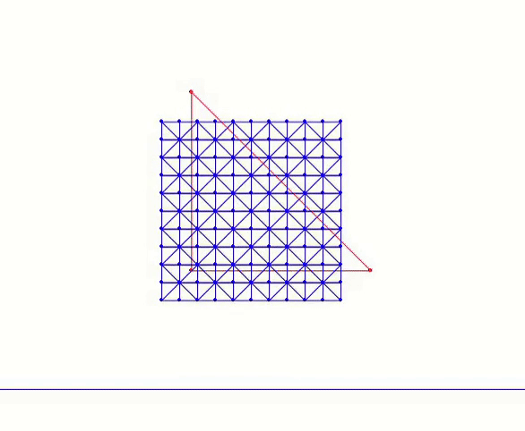

Case Study: ABD Square Drop*
Let’s now implement Affine Body Dynamics (ABD) in 2D for a neo-Hookean version of the square drop simulation. This requires only minor modifications to the standard IPC simulation code. The full implementation is available in the 9_reduced_DOF folder of our solid simulation tutorial.
We begin by introducing a function to compute the reduced basis. In ABD, we consider only affine deformations. Therefore, we use method=1 (polynomial basis) and order=1 (linear basis) to extract the linear basis:
Implementation 25.4.1 (Compute reduced basis, utils.py).
def compute_reduced_basis(x, e, vol, IB, mu_lame, lam, method, order):
if method == 0: # full basis, no reduction
basis = np.zeros((len(x) * 2, len(x) * 2))
for i in range(len(x) * 2):
basis[i][i] = 1
return basis
elif method == 1: # polynomial basis
if order == 1: # linear basis, or affine basis
basis = np.zeros((len(x) * 2, 6)) # 1, x, y for both x- and y-displacements
for i in range(len(x)):
for d in range(2):
basis[i * 2 + d][d * 3] = 1
basis[i * 2 + d][d * 3 + 1] = x[i][0]
basis[i * 2 + d][d * 3 + 2] = x[i][1]
elif order == 2: # quadratic polynomial basis
basis = np.zeros((len(x) * 2, 12)) # 1, x, y, x^2, xy, y^2 for both x- and y-displacements
for i in range(len(x)):
for d in range(2):
basis[i * 2 + d][d * 6] = 1
basis[i * 2 + d][d * 6 + 1] = x[i][0]
basis[i * 2 + d][d * 6 + 2] = x[i][1]
basis[i * 2 + d][d * 6 + 3] = x[i][0] * x[i][0]
basis[i * 2 + d][d * 6 + 4] = x[i][0] * x[i][1]
basis[i * 2 + d][d * 6 + 5] = x[i][1] * x[i][1]
elif order == 3: # cubic polynomial basis
basis = np.zeros((len(x) * 2, 20)) # 1, x, y, x^2, xy, y^2, x^3, x^2y, xy^2, y^3 for both x- and y-displacements
for i in range(len(x)):
for d in range(2):
basis[i * 2 + d][d * 10] = 1
basis[i * 2 + d][d * 10 + 1] = x[i][0]
basis[i * 2 + d][d * 10 + 2] = x[i][1]
basis[i * 2 + d][d * 10 + 3] = x[i][0] * x[i][0]
basis[i * 2 + d][d * 10 + 4] = x[i][0] * x[i][1]
basis[i * 2 + d][d * 10 + 5] = x[i][1] * x[i][1]
basis[i * 2 + d][d * 10 + 6] = x[i][0] * x[i][0] * x[i][0]
basis[i * 2 + d][d * 10 + 7] = x[i][0] * x[i][0] * x[i][1]
basis[i * 2 + d][d * 10 + 8] = x[i][0] * x[i][1] * x[i][1]
basis[i * 2 + d][d * 10 + 9] = x[i][1] * x[i][1] * x[i][1]
else:
print("unsupported order of polynomial basis for reduced DOF")
exit()
return basis
else: # modal-order reduction
if order <= 0 or order >= len(x) * 2:
print("invalid number of target basis for modal reduction")
exit()
IJV = NeoHookeanEnergy.hess(x, e, vol, IB, mu_lame, lam, project_PSD=False)
H = sparse.coo_matrix((IJV[2], (IJV[0], IJV[1])), shape=(len(x) * 2, len(x) * 2)).tocsr()
eigenvalues, eigenvectors = eigsh(H, k=order, which='SM') # get 'order' eigenvectors with smallest eigenvalues
return eigenvectors
Here, method=0 refers to full-space simulation and returns immediately without computing a basis.
method=1 computes polynomial bases, including linear, quadratic, and cubic functions. For each basis vector, the displacement components at each node are expressed as polynomial functions of the node’s material-space coordinates.
method=2 computes bases via linear modal analysis, which solves the eigensystem of the elasticity Hessian and extracts displacement fields that correspond to the deformation modes that increases the least amount of energy. This will be discussed in more detail in the next lecture.
After computing the basis, we restrict the simulation to the corresponding subspace by projecting the Hessian matrix and the gradient vector. This projection follows the chain rule, as described in Equation (25.3.1). The relevant implementation is:
Implementation 25.4.2 (Compute reduced search direction, time_integrator.py).
def search_dir(x, e, x_tilde, m, vol, IB, mu_lame, lam, y_ground, contact_area, is_DBC, reduced_basis, h):
projected_hess = IP_hess(x, e, x_tilde, m, vol, IB, mu_lame, lam, y_ground, contact_area, h)
reshaped_grad = IP_grad(x, e, x_tilde, m, vol, IB, mu_lame, lam, y_ground, contact_area, h).reshape(len(x) * 2, 1)
# eliminate DOF by modifying gradient and Hessian for DBC:
for i, j in zip(*projected_hess.nonzero()):
if is_DBC[int(i / 2)] | is_DBC[int(j / 2)]:
projected_hess[i, j] = (i == j)
for i in range(0, len(x)):
if is_DBC[i]:
reshaped_grad[i * 2] = reshaped_grad[i * 2 + 1] = 0.0
reduced_hess = reduced_basis.T.dot(projected_hess.dot(reduced_basis)) # applying chain rule
reduced_grad = reduced_basis.T.dot(reshaped_grad) # applying chain rule
return (reduced_basis.dot(spsolve(reduced_hess, -reduced_grad))).reshape(len(x), 2) # transform to full space after the solve
These changes enable us to run the ABD version of the square-drop simulation:

In this example, we reduce the stiffness parameter to make the body softer, emphasizing the difference between ABD and standard IPC. The blue mesh is the original mesh (also used for collision), while the red triangle visualizes the reduced degrees of freedom.